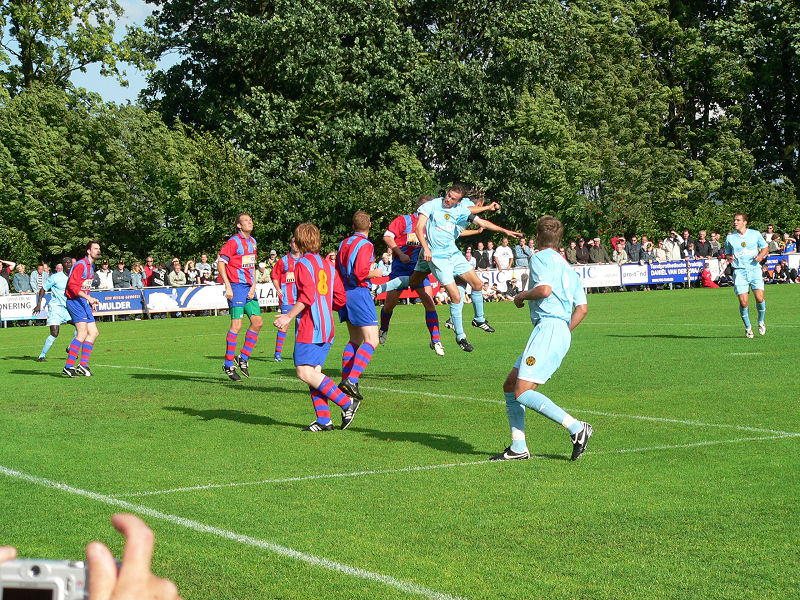

Na vier jaar fungeert UOW '02 weer als sparringpartner voor Roda JC.
De wedstrijd is een dikke minuut oud als UOW een strafschop krijgt.
De nummer 10 schiet de bal rechts in terwijl Castro naar links duikt. 1-0
voor de amateurs !!!
Cissé ondanks hevige Franse belangstelling nog steeds bij Roda. De Ivoriaan
speelt gretig en verkeert in absolute top-vorm.
Hadouir en Vandamme wisselden voortdurend elkaars positie. Hier is Hadouir
linksvoor. Vandamme was als rechtsvoor vaak in balbezit en in
de gelegenheid een bruikbare voorzet te geven. Op links was Jamaïcque
onzichtbaar.
Het was redelijk druk in Ubachs.
De Man (links) en Kah die gepromoveerd leek tot middenvelder.
Janssen is goed bijgebruind.

Een van de vele mogelijkheden vanuit een corner-situatie.
Opstelling Roda JC 1ste helft: Castro, Kah, De Man, Saeijs, De Jong, Meeuwis,
Bodor, Vandamme, Janssen, Hadouir, Cissé.
Deze rakkertjes zaten Hadouir voortdurend in de weg bij het nemen van
hoekschoppen.
Bodor, De Jong, Saeijs. Saeijs is nu Meeuwis dat niet meer wil zijn, de
aanvoerder.
Bodor feliciteert Cissé na diens treffer.
Meeuwis is nog steeds onder ons.
Vandamme, De Man.
De keerzijde van de roem...
Opstelling Roda JC 2de helft: Tyton, Kah, De Man, Saeijs, De Jong, Vormer,
Linssen, Tokaya, Janssen, Cissé, Oper.

Oper is nog niet terug op het oude niveau. Met Van Tornhout geblesseerd,
Cissé in de vitrine en Hleb onzeker is het voorin bij Roda JC dik,
maar dan ook dik onvoldoende!
Linssen is zowel verbaal als voetballend het type Meeuwis.
Ook Tyton is sterk in de communicatie.
De wedstrijd eindigt 1-10. Topscorer bij Roda was
Cissé met drie doelpunten. Janssen en Linssen scoorden beiden twee
keer. Kah, Oper
en Vormer troffen maakten ieder één doelpunt.